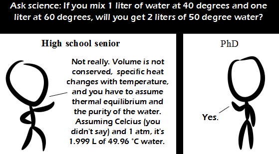

Comic JK 819
When I Feel Like It
⇤
<
?
>
⇥

⇤
<
?
>
⇥
Forum
.
RSS
.
Digg
.
Facebook
.
Reddit
.
Twitter
.
Stumbleupon
sig fig, it could be 4.5000... to 5.4999... litres. The correct answer, to the correct number of sig figs, is neither 1.6 nor 1.7 (and COULDN'T be 1.6 anyway), but 2. >>>>>>>>>> Of course it could be 1.6. Real scientists round to the even digit. >>>>>>>>>>> Giving the answer 2 seems more reasonable if you think about situations in which you should actually only have one significant figure. The rules for putting significant figures in your measurements state you should provide every digit you know exactly, plus one estimated digit at the end, so if you someone reports to you that they have 5 liters of water, it means they're basically looking at an unmarked (or only marked something like every 100 liters) and saying, "yeah, that looks like about five liters". In this case, it should be apparent that 2 is a perfectly appropriate response to 5/3. >?> Or you guys could stop this "sigfigs" silliness and just provide error bars, like reasonable people? >?>> This. >>>> There's a very simple problem with error bars: they're difficult to report in text. I can imagine writing a report for my manager saying that our next major production blast requires a mean of 56.258 kilos of ANFO with a standardly distributed confidence interval of 95% between 51.652 and 60.864 kilograms. I then list the amounts of ANFO and stemming material for each individual blasthole. He quickly decides I'm being pedantic and either tells me to rewrite it or, more likely, fires me and has my replacement rewrite it. >>>So, 56.2+-4.6? Volume is not conserved when mixing water? > Not, if it has different Temperatures..., however, PhD guy is right! >> "PhD guy is right!" <-- Of course he is! After all, the label "PhD" is at the top of the right box... >>> Even if the PhD text is unbolded. >I had never considered the water changing volume with temperature. But I suppose that it could... a bit. Not something that we discussed in highschool physics/chem. And it probably does not change appreciably in volume. >>You can also witness is in real life: 1. Put a glass bottle full of water (at 4°C) outside when it's considerable below 0°C. 2. Wait. 3. Wittness broken bottle. (But keep in mind that water expands with decreasing AND increasing temperatures (with ~4°C as the temperature of max. density), while most materials only have one "direction": The hotter, the more volume it needs; a prerequisite for all this is that all other influences don't change...) >>It certainly changes appreciably in volume when its temperature approaches 0ºC. >>>Also when it approaches 100ºC. The volume expansion at that point is roughly 1000fold, assuming there's enough 1atm space available for the steam to expand into it without appreciably modifying the pressure. (Also assuming we're talking long term with no condensation or short term with an instantly mixing gas providing that 1atm of pressure.) I have a PhD in your anus. >Most people get them framed. >>Phd meaning pretty hard dick? >>>...and we digress >>>Classy individualsff some of the significant digits grognards here better polish their OCD a little. "I measured 1 liter" and "If you begin with 1 liter" do not mean the same thing. >1.0 liters is not the same as 1 liter >>But saying "You begin with 1 litre" is the same as saying "You begin with 1.0000000r" litres in a question of this type.(dfBut NOT the same as saying "You begin with 1.0 litres", since there the signifip